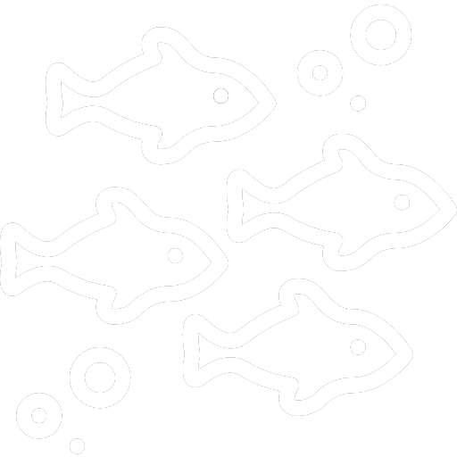
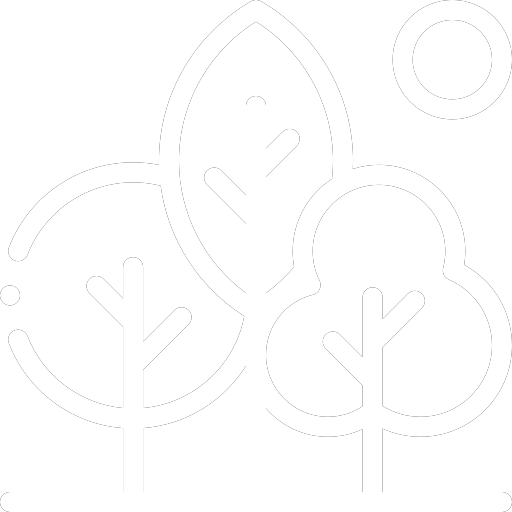
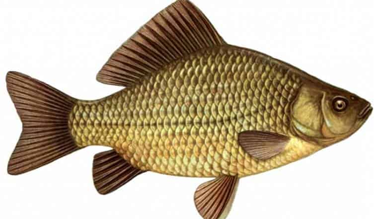
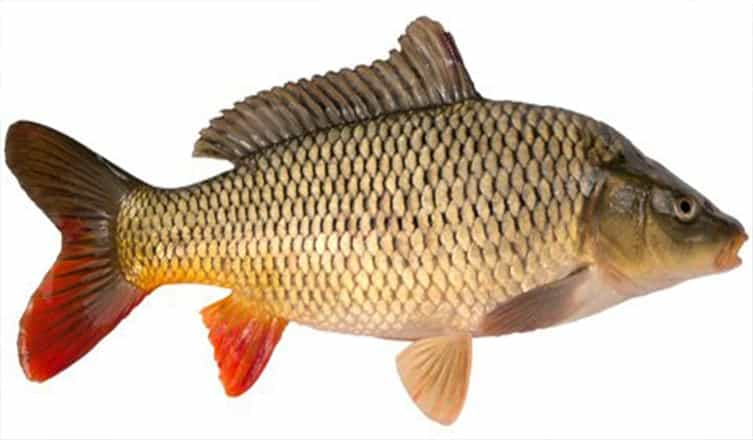
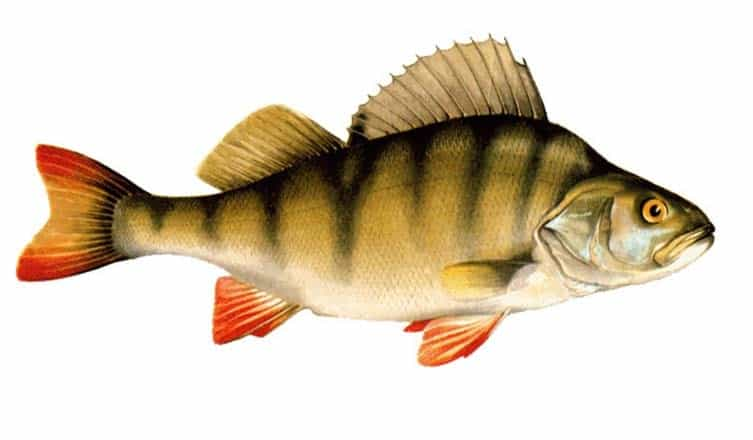
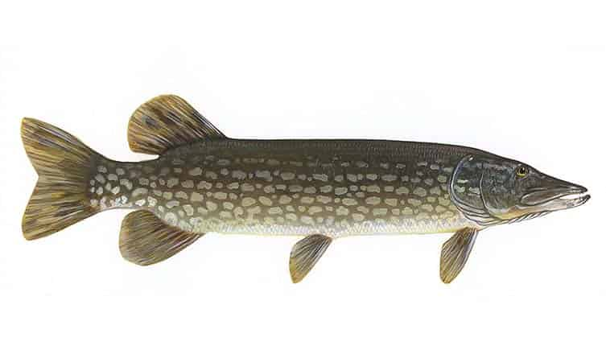
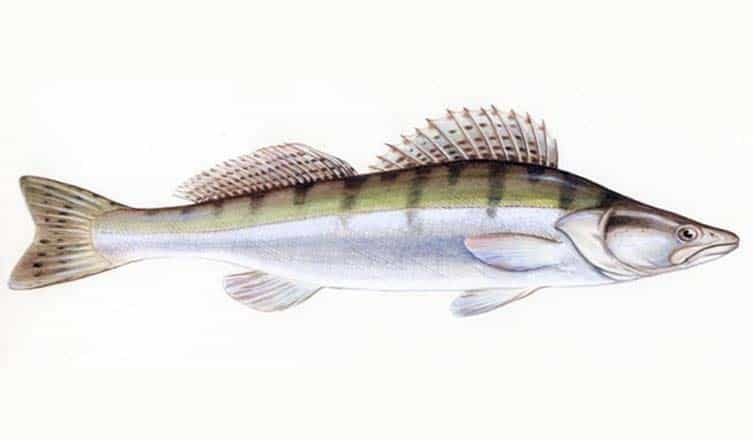
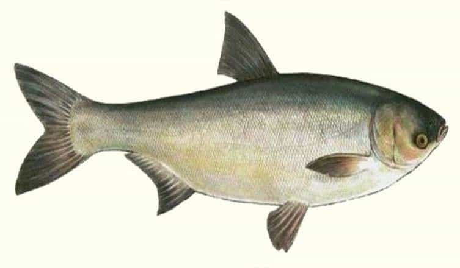

Види риболовлі: аматорська, спортивна та риболовля на хижака

Відмінне клювання коропа та іншої риби

Мальовнича природа далеко від міської метушні
Види риб:

Карась

Короп

Окунь

Щука

Судак

Товстолоб
Ціна та правила риболовлі:
Ціна:
Риболовля з 7:00 до 20:00 - 300грн.
Риболовля доба - 400грн.
Дітям до 10 років безкоштовно
Правили риболовлі на території озера:
На один риболовний квиток (одну людину) дозволено використовувати не більше 2-х поплавкових вудок або вудок далекого закиду або спінінгів з кормушками
Оплата квитка для ловлі риби проводиться до початку риболовлі. Розрахунок може бути як в готівковій так і заздалегідь безготівковій формі оплати
При вилові русалки і озерної акули більше 3 кг — рибалка зобов’язаний випустити їх назад у водойму.
Під час риболовлі на водоймах озера забороняється:
Вилов риби за допомогою сітки, “макушатників”, вибухових, хімічних, електричних і колючих знарядь лову
Розведення багать у невстановлених місцях (виключення — в мангалах та спеціально відведених для цього місцях)
Купання людей і тварин (дозволяється тільки у відведених для купання місцях) . Домашні тварини, привезені з собою на територію озера, не повинні залишатися без нагляду та становити загрозу або дискомфорт оточуючим. Наявність на собаках намордника, ошийника та повідця обов’язкова
Миття автотранспортних засобів
Засмічення недопалками від сигарет і будь-яким іншим сміттям водоймища і прилеглої території